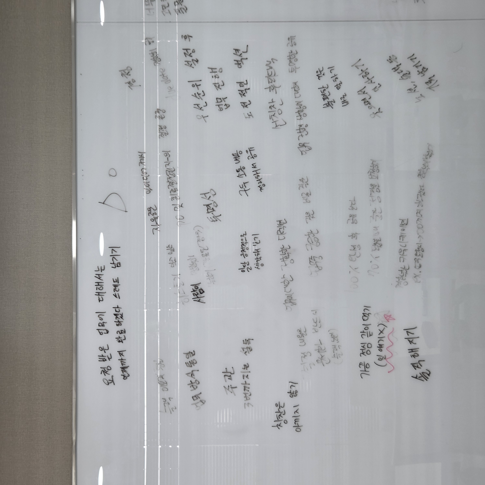

DO · 함께 지킬 것
동료가 '일'에 몰입할 수 있도록, 우리가 함께 하기로 한 행동.

DO NOT · 하지 않을 것
집중과 신뢰를 깨는 행동을 함께 정의 — 저부터 지키려 노력합니다.
🧩
코코지가 말하는 '자율과 책임 속에서 서로 존중' — 기준이 명확하면 서로 사소한 데 에너지를 쓰지 않고, 일에 집중할 수 있으니까요.
● 이도형 · Culture Fit책임 · 존중
- 동료의 성장에 진심을 기울이고,
- 동료의 생일을 사비로 챙기며
- 소속감과 헌신에 제 나름의 방식으로 보답했습니다.
💌
그 마음은 이런 편지와 메모로 돌아왔습니다 — 동료를 따뜻하게 챙기는 사람이라야, 아이와 부모의 일상을 따뜻하게 바꾸는 코코지의 일에도 진심일 수 있다고 믿습니다.

● 이도형 · Culture Fit따뜻함